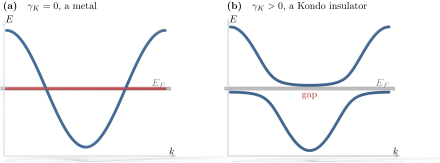
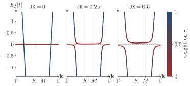
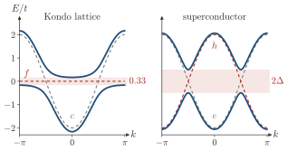
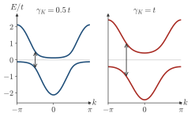

Page 10 of 11 of this session
8.13 Electronic structure of the Kondo lattice and the Kondo insulator
Why does a lattice of local moments turn a metal into an insulator? We will now see that for each spin (8.21) is a two-band Bloch Hamiltonian, in which the flat \(f\) band and the conduction band anti-cross. With one \(f\) fermion per site and a half-filled conduction band the lower band is full, so the Fermi level is in the gap.
\[H \sim \sum_{\mathbf k\alpha} \varepsilon_{\mathbf k}\, c^\dagger_{\mathbf k\alpha} c_{\mathbf k\alpha} \;-\; \gamma_K \sum_{\mathbf k,\alpha} f^\dagger_{\mathbf k\alpha}c_{\mathbf k\alpha} + \text{h.c.}, \tag{8.21}\]
This is the mean-field Hamiltonian of the Kondo lattice of Section 8.12. The operators \(c_{\mathbf k\alpha}\) are the conduction electrons with the band \(\varepsilon_{\mathbf k}\), the \(f_{\mathbf k\alpha}\) are the Abrikosov fermions of the impurity spins, and \(\gamma_K\) is the Kondo hybridization between them.
For each spin, equation (8.21) is an ordinary two-band Bloch Hamiltonian, in the sense of Section 2.5, in the basis \((c_{\mathbf
k\alpha}, f_{\mathbf k\alpha})\). When \(\gamma_K = 0\), there is no mixing at all. The spectrum is then the ordinary dispersive conduction band \(\varepsilon_{\mathbf k}\), together with a completely flat band of \(f\)-fermion levels at zero energy. This band is flat because the auxiliary fermions have no hopping of their own when the Kondo coupling is zero. When we switch the Kondo coupling on again, \(\gamma_K\) becomes finite, and the flat band and the dispersive band have an anti-crossing. In every place where the flat spinon band would cross the conduction band, a gap opens instead, and the gap is larger when the Kondo coupling is larger. We see this directly when we compare the spectra of the notebook for increasing \(\gamma_K\), which the notebook calls JK. At \(\gamma_K=0\) the bands cross. At \(\gamma_K=0.25\) there is already a visible gap at the crossing. At \(\gamma_K=0.5\) the gap is much larger. Figure 8.6 shows the two ends of this comparison, and where the Fermi level is in each case.
For each spin and each \(\mathbf k\), (8.21) has the two bands
\[E_\pm(\mathbf k)=\frac12\Big(\varepsilon_{\mathbf k}\pm\sqrt{\varepsilon_{\mathbf k}^2+4\gamma_K^2}\Big).\]
The direct gap is \(2\gamma_K\), at the crossing \(\varepsilon_{\mathbf k}=0\), and \(E_-<0<E_+\) at every \(\mathbf k\). With one \(f\) fermion per site and a half-filled conduction band the lower band is full, so the Fermi level is in the gap.
The steps From (8.21) to the gap
For one spin and one \(\mathbf k\), (8.21) is a \(2\times2\) matrix in the basis \((c_{\mathbf k},f_{\mathbf k})\),
\[H_{\mathbf k}=\begin{pmatrix}\varepsilon_{\mathbf k}&-\gamma_K\\-\gamma_K&0\end{pmatrix}.\]
Its trace is \(\varepsilon_{\mathbf k}\) and its determinant is \(-\gamma_K^2\), so its eigenvalues are the \(E_\pm(\mathbf k)\) of the box, and the sign of \(\gamma_K\) does not enter. The simplest case is the crossing, \(\varepsilon_{\mathbf k}=0\), where the two levels are \(\pm\gamma_K\), so the direct gap is \(2\gamma_K\). At any other \(\mathbf k\) the product \(E_+E_-=-\gamma_K^2\) is negative too, so \(E_-<0<E_+\), and the energy zero is always in the gap.
The gap between the two bands, which is the indirect gap, depends on the conduction band. Both \(E_-\) and \(E_+\) grow with \(\varepsilon_{\mathbf k}\), so the top of the lower band sits where \(\varepsilon_{\mathbf k}\) is largest, and the bottom of the upper band where it is smallest. For the chain with \(\varepsilon_k=-2t\cos k\) these are \(k=\pi\) and \(k=0\), and the indirect gap is
\[E_+\big|_{\varepsilon=-2t}-E_-\big|_{\varepsilon=2t}=2\Big(\sqrt{t^2+\gamma_K^2}-t\Big)\approx\frac{\gamma_K^2}{t}.\]
The first form holds for this chain, and the last one holds for \(\gamma_K\ll t\), within 10 percent up to \(\gamma_K=0.6\,t\).
The count of the particles comes last. Each \(\mathbf k\) and spin has two states, one in each band. A half-filled conduction band gives one half of a particle per \(\mathbf k\) and spin, and one \(f\) fermion per site gives another half. So there is one particle per \(\mathbf k\) and spin, the lower band is full, and the Fermi level is in the gap. The \(f\) level stays at zero with one \(f\) fermion per site when the conduction band is symmetric around zero. This is the case of the chain, where the full lower band holds \(0.500\) \(f\) fermions per spin for \(\gamma_K=0.6\,t\). For another band the constraint (8.11) moves the \(f\) level away from zero, which (8.21) leaves out.

Schematic 8.11 shows the three spectra of the notebook cell, on its triangular lattice and computed with pyqula. The color of each state is its weight on the conduction electrons, so we can follow the flat band through the anti-crossing.

g4_kondo_lattice_bands.py
add_onsite(-2.0) the conduction band is \(2[\cos2\pi k_1+\cos2\pi k_2+\cos2\pi(k_1+k_2)]-2\) in the reduced momenta \(k_1\) and \(k_2\). It runs from \(-5\) at \(K\) to \(4\) at \(\Gamma\), outside the window of the plot. The call H2HFH(h, JK=...) adds one \(f\) site per site with its level at zero, and JK is the hopping between the two sites. This is the hybridization \(\gamma_K\) of (8.21) up to its sign, a gauge choice that leaves the bands the same. The panels are JK=0, JK=0.25 and JK=0.5, and the color is the weight of each state on the conduction electrons. At JK=0 the flat \(f\) level crosses the conduction band. For JK=0.25 and JK=0.5 the direct gap at the crossing is \(0.5\) and \(1.0\). The indirect gap goes from the top of the lower band at \(\Gamma\) to the bottom of the upper band at \(K\). It is \(0.028\) and \(0.111\), the same on a mesh of 90 by 90 momenta. The dashed line is the energy zero, which lies in this gap. Each drawn band holds the two spins, so two of the four bands of pyqula lie below zero. This is not the half-filled insulator of Figure 8.6, since this conduction band is not symmetric around zero and H2HFH does not impose the constraint (8.11). With the states below zero filled, the \(f\) sites hold \(0.46\) and \(0.48\) fermions per site, and not one. Look at the color of the flat band, which turns from red to blue where it meets the conduction band.Physically, the ground state of this hybridized system is non-magnetic by construction. It has total spin zero and it is time-reversal symmetric, in the same way as for the single impurity (8.17) and for the quantum spin liquid of Section 8.9. The consequence for the electronic structure, however, is new. A lattice of Kondo impurities turns a system that would otherwise be an ordinary metal into an insulator, because every electron at the Fermi surface forms a bound state with a magnetic impurity. This is the Kondo insulator, which is also called a heavy-fermion insulator, and SmB\(_6\), which we already introduced in Section 8.1, is the standard real material example.
Note that there is a similarity with a quite different construction of Session 5. Superconductors also open a gap in their quasiparticle spectrum through a hybridization, the pairing \(\Delta\) in the Bogoliubov-de Gennes Hamiltonian of Section 5.8. There it is between electrons and holes and not between electrons and auxiliary fermions. The two systems are physically very different, but the mechanism that opens a gap in the single-particle spectrum is very similar. The way the effect appears is also similar. The temperature scale at which the gap of the Kondo insulator becomes visible depends on the Kondo coupling in a strongly non-linear way. We know the same kind of non-linear dependence from the superconducting gap as a function of the pairing interaction.

g4_kondo_and_swave_chain.py
Notebook check-in: session8.ipynb, “Quantum magnetism in the Kondo lattice” (Core) and “Spinon dispersion in the Kondo lattice” (Challenge)
The first exercise builds (8.21) directly on a lattice of van der Waals type. You identify the flat band of the Kondo sites and the anti-crossing with the conduction band, and you check what happens to the gap when you change the chemical potential. The second exercise adds a direct exchange coupling between the Kondo sites, which gives a dispersion to the spinon band that would otherwise be flat. This is the lattice version of the Doniach picture. The Kondo coupling \(J_K\) favors a local screened singlet, while the direct exchange \(J\) favors magnetic correlations between the local moments. The competition between them decides which regime is stable, the screened one or the magnetic one.
With ARPES we measure the occupied bands as a function of momentum. For the bands of (8.21) it would show a region just below the Fermi level with no states, since the lower band ends below the gap. In the Kondo insulator SmB\(_6\) such a measurement sees dispersive states inside the hybridization gap. They show almost no dependence on \(k_z\), which indicates that they come from the surface, and they vanish together with the hybridization gap at around \(150\) K. If these states come from the surface, they are not part of (8.21), which describes the bulk. That the measured hybridization gap is the gap of (8.21) is our reading. The measurement is in this article.
For one spin, the Kondo lattice has the Bloch Hamiltonian
\[H_{\mathbf k}=\begin{pmatrix}\varepsilon_{\mathbf k}&-\gamma_K\\-\gamma_K&0\end{pmatrix}\]
in the basis \((c_{\mathbf k},f_{\mathbf k})\). The band of the conduction electrons \(c\) is \(\varepsilon_{\mathbf k}\), and \(\gamma_K\) mixes them with \(f\). There is one \(f\) fermion per site, and the conduction band is half filled. How many particles per \(\mathbf k\) and spin fill the two bands?
Show the answers
- A. ✗ False
This is false. This counts only the conduction band. The \(f\) level adds another one half, and the sum is one, which fills the lower band.
- B. ✓ True
This is true. The conduction band gives one half and the \(f\) level gives one half, so there is one particle for the two states at each \(\mathbf k\) and spin. The lower band is full, and the Fermi level lies in the gap.
- C. ✗ False
This is false. Two particles per \(\mathbf k\) and spin would need a full conduction band, with two electrons per site, and two \(f\) fermions per site. The constraint allows one \(f\) fermion and we have one electron per site.
For one spin, the Kondo lattice has the Bloch Hamiltonian
\[H_{\mathbf k}=\begin{pmatrix}\varepsilon_{\mathbf k}&-\gamma_K\\-\gamma_K&0\end{pmatrix}.\]
The band of the conduction electrons \(c\) is \(\varepsilon_{\mathbf k}\), and \(\gamma_K\) mixes them with \(f\). At the crossing, \(\varepsilon_{\mathbf k}=0\). If we double \(\gamma_K\), what happens to the direct gap there?
Show the answers
- A. ✗ False
This is false. At the crossing the eigenvalues are \(\pm\gamma_K\). For \(\gamma_K=0.5\) the gap is \(1\), and for \(\gamma_K=1\) it is \(2\).
- B. ✗ False
This is false. The gap \(2\gamma_K\) is linear in \(\gamma_K\). Going from \(\gamma_K=0.5\) to \(1\) the gap goes from \(1\) to \(2\) and not to \(4\).
- C. ✓ True
This is true. At \(\varepsilon_{\mathbf k}=0\) the two-by-two Hamiltonian has the eigenvalues \(\pm\gamma_K\), so the direct gap is \(2\gamma_K\). This is the sense in which a larger Kondo coupling gives a larger gap.

The two bands per spin of a Kondo lattice on a chain with \(\varepsilon_k=-2t\cos k\), computed with pyqula for \(\gamma_K=0.5\,t\) and \(\gamma_K=t\). The direct gap at the crossing, the arrow, is \(2\gamma_K\), so it doubles from \(t\) to \(2t\).
Each picture shows the bands of a Kondo lattice on a chain, for one spin. The Bloch Hamiltonian in the basis \((c_k,f_k)\) is
\[H_k=\begin{pmatrix}-2t\cos k&-\gamma_K\\-\gamma_K&0\end{pmatrix}.\]
Here \(t\) is the hopping of the electrons \(c\), and \(\gamma_K\) mixes them with \(f\). Filled states are dark and empty states are light. A half-filled level is in a middle tone. The dashed line is the Fermi level. Which picture is a Kondo insulator?
Show the answers
- A. ✗ False
This is false. Here \(\gamma_K=0\), so the conduction band crosses the flat \(f\) level at \(k=\pm\pi/2\), right at the Fermi level. There is one particle per \(k\) and spin, and the conduction band holds one half of it, so the \(f\) level holds the other half and is half filled. There are empty states just above the Fermi level, so this is a metal.
- B. ✓ True
This is true. Here \(\gamma_K=0.6\,t\), and there is one particle per \(k\) and spin, half from the conduction band and half from the \(f\) level. This fills the lower band, so the Fermi level is in the gap of \(0.33\,t\) between the two bands.
- C. ✗ False
This is false. The bands are the same as in the insulator, with \(\gamma_K=0.6\,t\), but there are only \(0.6\) particles per \(k\) and spin. The lower band holds one, so it is not full, and the Fermi level cuts it at \(-0.37\,t\). This is a metal.
Take the Kondo lattice on a chain, with \(\varepsilon_k=-2t\cos k\), \(t=1\) and \(\gamma_K=0.6\). Compute the indirect gap between the two bands of (8.21), and compare it with \(\gamma_K^2/t\).
Solution
Both bands grow with \(\varepsilon_k\), so the top of the lower band is at \(k=\pi\), where \(\varepsilon_k=2t\), and the bottom of the upper band is at \(k=0\), where \(\varepsilon_k=-2t\). There
\[E_-\big|_{\varepsilon=2t}=t-\sqrt{t^2+\gamma_K^2},\qquad E_+\big|_{\varepsilon=-2t}=\sqrt{t^2+\gamma_K^2}-t,\]
so the indirect gap is \(2(\sqrt{t^2+\gamma_K^2}-t)\), which is \(2(\sqrt{1.36}-1)=0.33\). The estimate \(\gamma_K^2/t\) gives \(0.36\), which is 8 percent too large, since the expansion of the square root in \(\gamma_K/t\) is no longer very good at \(0.6\). The direct gap at the crossing is \(2\gamma_K=1.2\), which is about \(3.6\) times larger. So the smallest energy to move a particle from the lower band to the upper band is much smaller than the gap at the crossing. This is the indirect gap, and for a small hybridization it grows as \(\gamma_K^2\).
Try it. Increase the exchange J between the Kondo sites in the three panels. The flat band of the local moments should acquire a dispersion, and with JK=0.5 the two bands already overlap in energy at J=0.025, so the gap between them closes. Then increase JK to 1.0 and check that the gap stays open for the three values of J.